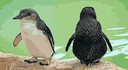
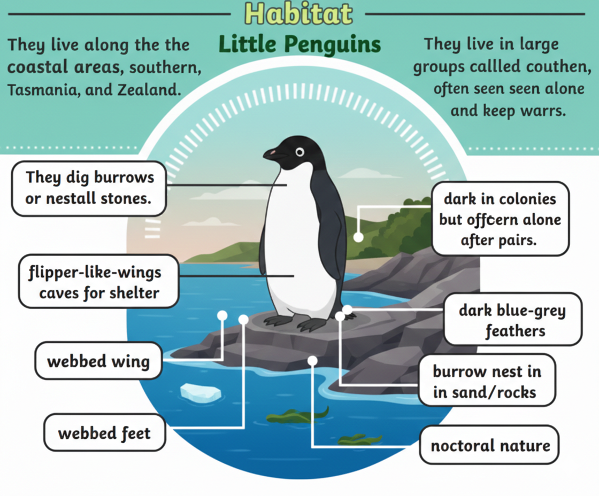
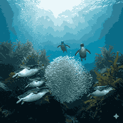

The Smallest Penguins in the World

Little penguins, also known as little blue penguins, are the smallest penguin species. They are easily recognized by their blue-gray feathers and small size.

Little penguins live along the southern coasts of Australia and New Zealand. They prefer sandy beaches, rocky shores, and coastal islands for nesting.

Their diet mainly consists of small fish, squid, and crustaceans. They are quick swimmers and hunt close to shore.